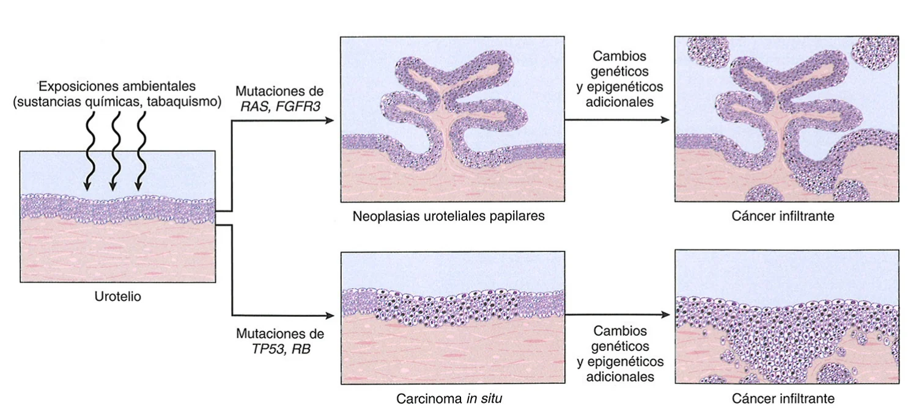
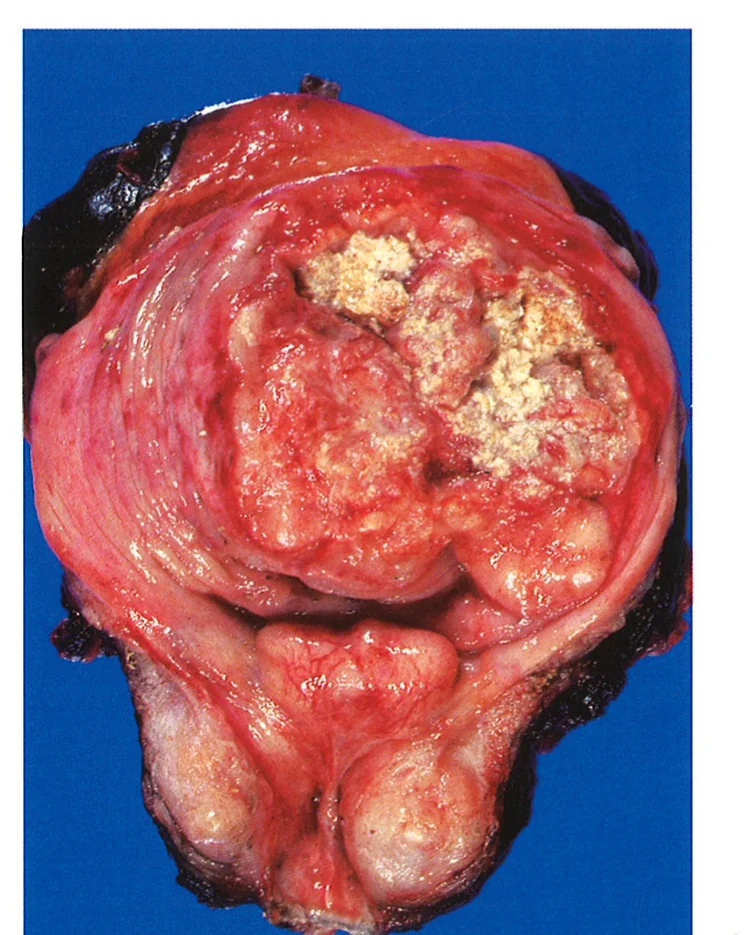
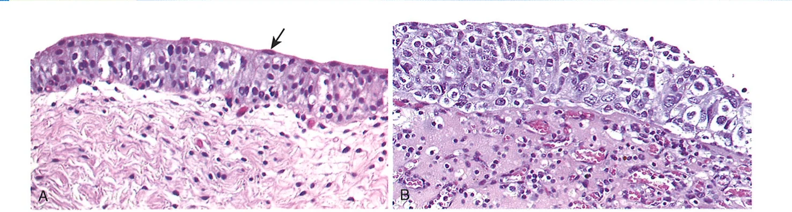
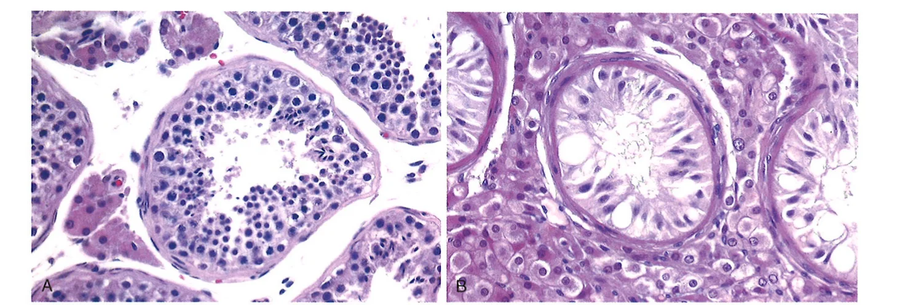
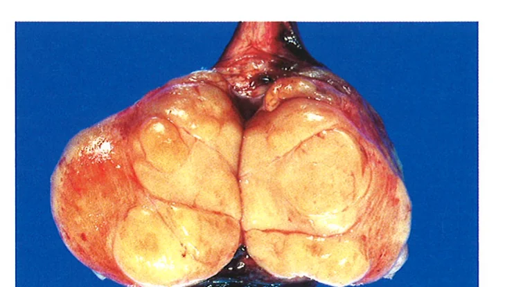
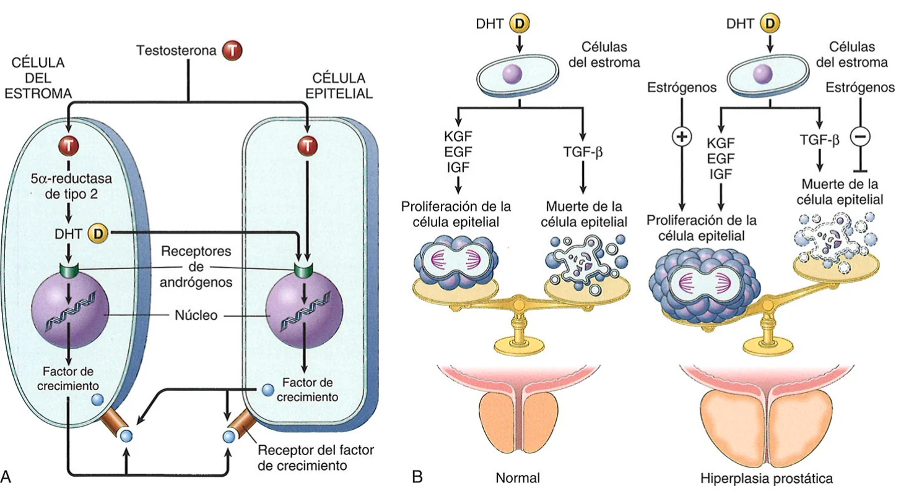
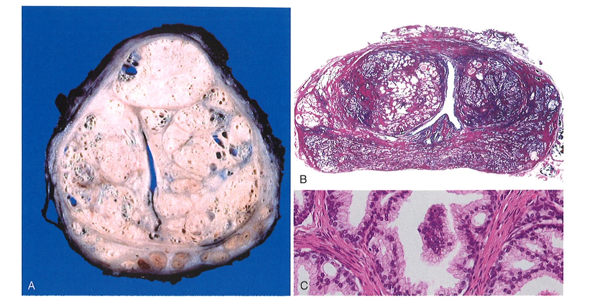
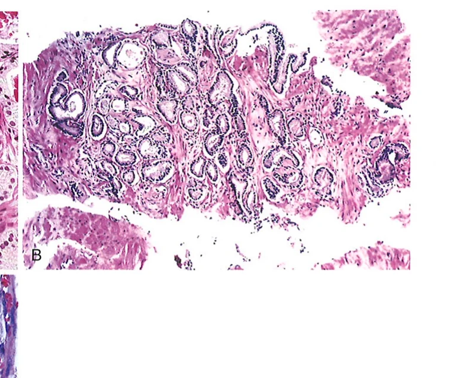

Qué cubre esta guía
Las citas p. N corresponden a la página impresa del libro. El texto se contrastó con el OCR del capítulo.
Lo esencial en 60 segundos
- El cáncer de vejiga tiene dos vías moleculares: papilar con FGFR3/RAS/PI3K (invasión muscular solo en ~20%) y plana desde CIS con p53/RB tempranos p. 958.
- La mortalidad del tumor urotelial salta con la invasión de la muscular propia: 30% a 5 años; el CIS aislado mata en 7% frente a 45% del CIS asociado a carcinoma infiltrante p. 958, 961.
- El tabaquismo aumenta el riesgo de cáncer vesical 3-7 veces y explica el 50-80% de los casos masculinos; Schistosoma haematobium produce carcinoma epidermoide en el 70% p. 958.
- Criptorquidia: 1% de los lactantes, riesgo de cáncer 3-5 veces; orquiopexia entre 6 y 12 meses reduce pero no elimina el riesgo p. 967.
- Los TCG derivan de la GCNIS (OCT3/4 y NANOG) con isocromosoma 12p; marcadores AFP (saco vitelino), hCG (sincitiotrofoblasto) y LDH (carga) p. 970, 973.
- HBP: zona de transición y DHT estromal por 5-reductasa tipo 2, no premaligna; el carcinoma de próstata surge en la zona periférica con fusión TMPRSS2-ETS y Gleason como factor pronóstico p. 975-976, 979, 981.
Ideas clave
- La pelvis renal, los uréteres, la vejiga y la uretra (salvo la porción terminal) están revestidas por urotelio, epitelio de transición de 5-6 capas con hendiduras nucleares lineales y capa superficial de células paraguas; todo el espectro patológico de estas vías parte de este epitelio especializado p. 953.
- La obstrucción de la unión pieloureteral (UPU) es la causa más común de hidronefrosis en lactantes y niños; afecta preferentemente a hombres, es bilateral en el 20% y se atribuye a organización anómala del músculo liso o exceso de colágeno en la UPU p. 954.
- Las metaplasias vesicales son lesiones precursoras: la metaplasia intestinal extensa y multifocal precede al adenocarcinoma, y la metaplasia escamosa queratinizante extensa precede a la displasia y al carcinoma epidermoide (prototipo: esquistosomiasis por S. haematobium) p. 957.
- El cáncer de vejiga es el 4º cáncer más común en hombres estadounidenses; el tabaquismo aumenta el riesgo 3-7 veces y explica el 50-80% de los cánceres en hombres; las arilaminas lo hacen 15-40 años después de la exposición p. 958.
- Hay dos vías moleculares en el cáncer de vejiga: los papilares no invasores tienen mutaciones de FGFR3, RAS y PI3K (recidivan, pero solo invaden el músculo en ~20%), mientras que la mayoría de los invasores de la muscular progresan desde un CIS plano con mutaciones tempranas de p53 y RB p. 958.
- La variable pronóstica clave del tumor urotelial es la invasión de la muscular propia (detrusor): mortalidad del 30% a 5 años una vez producida; el CIS aislado progresa a invasión muscular en 28% (frente a 59% del CIS asociado a carcinoma infiltrante) p. 958, 961.
- La criptorquidia afecta al 1% de los lactantes de 1 año; da esterilidad y un riesgo de cáncer testicular 3-5 veces mayor, que la orquiopexia (6-12 meses) reduce pero no elimina, lo que apoya un defecto gonadal intrauterino y no meramente anatómico p. 967.
- Los tumores de células germinales (TCG) son el tumor maligno más común de los hombres de 15-45 años; todos los tipos (salvo el espermatocítico) derivan de la neoplasia de células germinales in situ (GCNIS) y comparten el isocromosoma 12p p. 969-970.
- Marcadores séricos: AFP (tumor del saco vitelino), hCG (sincitiotrofoblasto del coriocarcinoma y 15% de los seminomas) y LDH (carga tumoral); elevados en >80% de los TCG no seminomatosos p. 973.
- La hiperplasia benigna de próstata (HBP) surge de la zona de transición y comprime la uretra; su estimulo es la DHT sintetizada por la 5-reductasa tipo 2 en el estroma; no es lesión premaligna p. 975-976.
- El adenocarcinoma de próstata surge de la zona periférica (palpable al tacto rectal); alteración genética más común: fusión TMPRSS2-ETS (ERG) en ~50%; los metástasis son osteoblásticos en cuerpos vertebrales p. 975, 979-980, 982.
- La gradación de Gleason (grados 1-5 según patrón glandular, suma de patrón primario + secundario) y el estadio pTNM son los factores pronósticos más importantes del cáncer de próstata p. 981.
Introducción: el urotelio
Las vías urinarias inferiores (pelvis renal, uréteres, vejiga y uretra proximal) comparten el urotelio: epitelio de transición de cinco a seis capas de células con núcleos ovalados, hendiduras nucleares lineales y una capa superficial de células paraaguas que protege de la osmolaridad de la orina p. 953.
Uréteres
Anomalías congénitas y lesiones obstructivas
- Las malformaciones ureterales se hallan en el 2-3% de las autopsias; la mayoría carece de relevancia clínica p. 954.
- Obstrucción de la UPU: causa más común de hidronefrosis infantil; en lactantes predomina en hombres, bilateral en 20%, asociada a otras anomalías y con agenesia renal contralateral en una minoría; en adultos es más común en mujeres y unilateral. Mecanismo: organización anómala de los haces de músculo liso o depósito excesivo de colágeno, rara vez compresión por vasos renales anómalos p. 954.
- La obstrucción ureteral (intrínseca o extrínseca) produce hidrouréter, hidronefrosis y pielonefritis; en adultos es aguda (cálculos) o crónica (tumores, fibrosis retroperitoneal esclerosante idiopática) p. 954-955.
Tumores
- Tumores primarios ureterales infrecuentes; benignos casi siempre mesenquimatosos. El pólipo fibroepitelial (niños) es tejido conjuntivo vascularizado laxo revestido por urotelio p. 954.
- Los malignos son casi todos carcinomas uroteliales, en la 6ª-7ª décadas, obstructivos y frecuentemente sincrónicos con carcinomas de vejiga o pelvis renal p. 954 (fig. 21.1).
Vejiga y uréteres
Anomalías congénitas
- Reflujo vesicoureteral: malformación congénita más común y grave; predispone a pielonefritis ascendente y pérdida de función renal p. 955.
- Divertículos: congénitos (falta focal de musculatura u obstrucción fetal) o adquiridos por hiperplasia prostática con aumento de la presión intravesical. Son sitios de estasis → infección y cálculos; el carcinoma que surge en ellos debuta en estadio más avanzado por la muscular propia delgada o ausente p. 955.
- Extrofia vesical: falla de cierre de la pared abdominal; la mucosa expuesta sufre metaplasia glandular cólica, infección crónica y mayor riesgo de adenocarcinoma del remanente vesical p. 955.
- Anomalías del uraco: el uraco permeable da fístula vesicoumbilical o quiste del uraco; estos representan solo el 0,1-0,3% de los cánceres vesicales, pero el 20-40% de los adenocarcinomas vesicales p. 955.
Inflamación: cistitis
Factores predisponentes: cálculos, obstrucción, diabetes mellitus, instrumentación, inmunodeficiencia; microorganismos: coliformes, E. coli, seguidos de Proteus, Klebsiella y Enterobacter p. 955.
- Triada clínica de toda cistitis: frecuencia (cada 15-20 min en casos agudos), dolor suprapúbico y disuria; puede anteceder a una pielonefritis. Si hay estasis subyacente (hipertrofia prostática, cistocele, cálculos, tumor), hay que corregir la lesión primaria primero p. 956.
| Forma especial | Rasgo distintivo | Relevancia clínica |
|---|---|---|
| Cistitis intersticial | Mujeres; dolor suprapúbico, urgencia, hematuria; fisuras mucosas y glomerulaciones; mastocitos submucosos; úlceras de Hunner en la fase ulcerativa; fibrosis transmural con vejiga contraída al final | Diagnóstico de exclusión; la biopsia sirve sobre todo para descartar CIS, que la imita clínicamente; tratamiento empírico p. 956 |
| Malacoplaquia | Placas amarillas de 3-4 cm; macrófagos espumosos PAS+ con cuerpos de Michaelis-Gutmann (concreciones cálcicas lisosomales) | Defecto adquirido de fagocitos sobre infección por E. coli; inmunodeprimidos y trasplantados renales p. 956 |
| Cistitis folicular | Folículos linfoides en mucosa y pared | Variante de la inflamación crónica p. 956 |
| Cistitis eosinófila | Infiltración submucosa por eosinófilos | Suele ser subaguda inespecífica, pero puede reflejar un trastorno alérgico sistémico p. 956 |
| Cistitis polipoidea | Edema e inflamación submucosa marcada con proyecciones polipoideas | Puede confundirse clínica e histológicamente con el carcinoma urotelial papilar p. 957 |
Fuente: p. 956-957 (formas especiales de cistitis).
Lesiones metaplásicas
| Lesión | Mecanismo y morfología | Importancia |
|---|---|---|
| Cistitis quística y glandular | Nidos de von Brunn crecen hacia la lámina propia; metaplasia cúbica/cilíndrica (glandular) o espacios quísticos revestidos por urotelio aplanado (quística) | Lesiones comunes; la variante con células caliciformes (metaplasia intestinal extensa y multifocal) es precursora de adenocarcinoma p. 957 |
| Metaplasia escamosa | El urotelio lesionado se sustituye por epitelio escamoso más resistente; distinguir del epitelio glucógeno normal del trígono femenino | La metaplasia queratinizante multifocal extensa precede a displasia y carcinoma epidermoide in situ e infiltrante; secuencia clásica en la esquistosomiasis vesical p. 957 |
| Adenoma nefrógeno | Epitelio cúbico focal con patrón papilar; en trasplantados renales se ha demostrado implantación de células tubulares renales | Menos de 1 cm, pero puede infiltrar lámina propia y detrusor superficial imitando malignidad p. 957 |
Fuente: p. 957 (lesiones metaplásicas).
Neoplasias uroteliales
Constituyen ~90% de los tumores de vejiga; el resto son escamosos y glandulares. Muchos son multifocales al debut p. 957.
Epidemiología y etiología
- Hombres:mujer 3:1; 80% de los pacientes entre 50 y 80 años; no es familiar p. 958.
- Tabaquismo: riesgo 3-7 veces mayor; 50-80% de los cánceres masculinos p. 958.
- Arilaminas industriales (2-naftilamina): cáncer 15-40 años después de la exposición p. 958.
- Schistosoma haematobium: inflamación crónica → metaplasia escamosa → 70% de los cánceres son epidermoides en áreas endémicas p. 958.
- Ciclofosfamida (cistitis hemorrágica y cáncer), radiación pélvica previa y uso prolongado de analgésicos p. 958.
Patogenia: dos vías moleculares
| Característica | Vía papilar | Vía plana (CIS) |
|---|---|---|
| Lesión precursora | Neoplasia papilar exofítica | CIS plano |
| Alteraciones | Ganancia de función: FGFR3 amplificado, RAS, PI3K | Mutaciones de p53 y RB tempranas |
| Comportamiento | Recidiva frecuente; invasión muscular solo en ~20% | Mayoría de los cánceres infiltrantes de la muscular |
Fuente: p. 958 (fig. 21.5, patogenia).
- Alta carga de mutaciones somáticas, comparable al cáncer de pulmón y al melanoma, coherente con la acción de carcinógenos ambientales p. 958.
- Los cánceres papilares recidivan con frecuencia, pero invaden el músculo en solo el 20% de los casos aproximadamente, mientras que los infiltrantes suelen progresar desde un carcinoma in situ plano p. 958.


Morfología y gradación
- Aspectos: papilar, nodular o plano; las lesiones papilares son excrecencias rojizas de 1 a 5 cm, a menudo múltiples p. 959.
| Lesión (OMS/ISUP 2016) | Morfología | Comportamiento |
|---|---|---|
| Papiloma exofítico | ≤1% de los tumores, pacientes jóvenes; frondas con eje fibrovascular y urotelio normal | Recidiva y progresión infrecuentes p. 959 |
| Papiloma invertido | Cordones interanastomosados de urotelio inocuo que se extienden a la lámina propia | Completamente benigno, aunque simula invasión p. 959 |
| NUPBPM | Urotelio más grueso y denso, citología casi normal | Recidivan con la misma morfología; la progresión a mayor grado es rara p. 960 |
| Carcinoma papilar de bajo grado | Arquitectura ordenada, polaridad y cohesión conservadas, mitosis basales escasas | Puede recidivar; rara vez invade; rara vez mortal p. 960 |
| Carcinoma papilar de alto grado | Células no cohesionadas, núcleos hipercromáticos grandes, anaplasia, desorden y pérdida de polaridad | Alta tasa de progresión a invasión muscular, metástasis ganglionares y muerte p. 960 |
| Carcinoma in situ (CIS) | Urotelio desorganizado con células de núcleos pleomorfos y muy agrandados; lesión plana de alto grado | La mitad de los cánceres infiltrantes no muestran lesión precursora visible: fue destruida por el componente infiltrante p. 958, 960 |
Fuente: p. 959-961 (tabla 21.4, clasificación y comportamiento).
- Aproximadamente la mitad de los cánceres infiltrantes ya han invadido la pared al diagnóstico, sin precursor visible; la invasión de lámina propia empeora el pronóstico, pero la mayor caída de supervivencia ocurre con la invasión de la muscular propia: mortalidad del 30% a 5 años p. 958.


Variantes y otros tumores
- Variantes inusuales de carcinoma urotelial: variante anidada de citología engañosamente anodina, carcinoma similar al linfoepitelioma, carcinoma micropapilar y carcinoma sarcomatoide p. 961.
- Carcinoma epidermoide puro: 3-7% en EE. UU., mucho más en zonas de esquistosomiasis; surge de mucosa queratinizante atípica sobre irritación e infección crónica; es más frecuente el carcinoma urotelial mixto con áreas escamosas p. 962.
- Adenocarcinoma: infrecuente; surge de restos del uraco o sobre metaplasia intestinal extensa p. 962.
- Carcinoma de células pequeñas: muy agresivo, asociado a pérdida de TP53 y RB p. 962.
- Mesenquimatosos: el benigno más común es el leiomioma; en niños, el rabdomiosarcoma embrionario (sarcoma botrioideo, masa como racimo de uvas); en adultos, el leiomiosarcoma. Secundarios por extensión directa: cérvix, útero, próstata, recto p. 962.
Características clínicas y tratamiento
- Hematuria indolora es el síntoma más común; frecuencia, urgencia y disuria pueden acompañar; la obstrucción del orificio ureteral da hidronefrosis o pielonefritis p. 961.
- Los tumores no invasivos del músculo (papilares no invasivos + invasión de lámina propia) son el 70-80% de las neoplasias uroteliales; el 20-30% invade la muscular p. 961.
- Tumores papilares de bajo grado pequeños: resección transuretral. CIS y tumores grandes, de alto grado, multifocales, recidivantes o con invasión de lámina propia: BCG intravesical (Mycobacterium bovis atenuado), que destruye el tumor por reacción inflamatoria local; fracasa si el CIS se extiende a la uretra o conductos prostáticos, donde el BCG no llega p. 961-962.
- Recidiva hasta en 70%; la mayoría aparece en sitios distintos pero clonalmente relacionados (implantación), otras son segundos primarios. Vigilancia de por vida con cistoscopia, biopsias y citología p. 961.
- Supervivencia a 10 años del 98% para papiloma, NUPBPM y bajo grado (<10% progresa); los de alto grado matan en ~25%; CIS aislado: muerte 7% frente a 45% del CIS con carcinoma infiltrante p. 961.
- Enfermedad metastásica: quimioterapia poco eficaz (supervivencia a 5 años del 15%); ~30% responde a inhibidores de puntos de control inmunitarios p. 962.


Uretra
- Uretritis: gonocócica o no gonocócica. Chlamydia trachomatis causa el 25-60% de las no gonocócicas en hombres y ~20% en mujeres; Ureaplasma urealyticum también. Suele acompañarse de cistitis en mujeres y prostatitis en hombres p. 963.
- Artritis reactiva (antes síndrome de Reiter): triada de artritis, conjuntivitis y uretritis; ejemplo de uretritis no infecciosa p. 963.
- Carúncula uretral: masa pequeña, roja y dolorosa alrededor del meato externo en mujeres de edad avanzada; tejido de granulación con mucosa friable que sangra; la escisión cura p. 963.
- Tumores: los de la uretra proximal muestran diferenciación urotelial (análogos vesicales); los de la uretra distal son carcinomas epidermoides relacionados con el VPH; adenocarcinomas raros, casi siempre en mujeres p. 963.
Pene
Anomalías congénitas, inflamación y fimosis
- Hipospadias (abertura ventral; ~1 de cada 300 nacidos vivos) y epispadias (dorsal): el orificio anómalo se contrae, obstruye, favorece infecciones ascendentes y, si está en la base del pene, obstruye la eyaculación y causa esterilidad; se asocian a criptorquidia y malformaciones urinarias p. 963.
- Fimosis: orificio prepucial estrecho, casi siempre por cicatrización de infecciones repetidas; interfiere la higiene y aumenta el riesgo de carcinoma de pene p. 963.
- Balanopostitis: C. albicans, anaerobios, Gardnerella y piógenos; favorecida por mala higiene en no circuncidados; el esmegma actúa como irritante local y produce cicatrices (fimosis) p. 964.
- Enfermedad de Peyronie: placas fibrosas entre los cuerpos cavernosos y la túnica albuginea, reactivas, por traumatismo microvascular e inflamación esclerosante; curvatura y dolor; cirugía o colagenasa p. 964.
Condiloma acuminado
- Verruga benigna de transmisión sexual por VPH de bajo riesgo (VPH-6, menos frecuentemente VPH-11); surco coronal e interior del prepucio p. 964.
- Histología: papilomatosis con acantosis, maduración conservada y coilocitosis (vacuolización perinuclear) p. 964.
Neoplasia intraepitelial del pene (PeIN) y carcinoma epidermoide
| Lesión | Etiología | Clínica | Riesgo de carcinoma infiltrante |
|---|---|---|---|
| PeIN diferenciada | No VPH; asociada a balanitis xerótica obliterante | Maduración parcial conservada | Sí, por la vía no viral p. 965 |
| Enfermedad de Bowen | VPH-16 (PeIN indiferenciada) | Hombres de edad avanzada; placa opaca solitaria blanca grisácea en cuerpo y escroto (roja aterciopelada en glande) | Carcinoma infiltrante en el 10% p. 965 |
| Papulosis bowenoide | VPH-16, histológicamente idéntica a Bowen | Adultos jóvenes sexualmente activos; papulas pardo-rojizas múltiples | Prácticamente nula; remite espontáneamente p. 965 |
Fuente: p. 965 (PeIN).
- Carcinoma epidermoide infiltrante: hombres de 40-70 años; <1% de los tumores malignos masculinos en EE. UU., pero 10-20% en zonas pobres de Asia, África y América del Sur. Factores: higiene deficiente, falta de circuncisión (el esmegma concentraría carcinógenos), VPH de alto riesgo, tabaquismo y liquen esclerosante p. 965.
- Patogenia VPH: E6 inactiva p53 y activa la telomerasa; E7 inactiva RB e induce p16, marcador sustituto de la infección por VPH de alto riesgo p. 965.
- Morfología: masa fungoide en coliflor, plana indurada o verrucosa; el subtipo basaloide, relacionado con VPH, invade de forma destructiva y evoluciona agresivamente p. 965-966.
- Clínica: crecimiento lento, presente más de 1 año; indoloro hasta ulcerarse; metástasis precoz a ganglios inguinales, pero solo el 50% de los ganglios inguinales agrandados contienen cáncer (el resto es hiperplasia reactiva); supervivencia a 5 años de 7-60% según el estadio ganglionar p. 966.
Testículo y epidídimo
Criptorquidia
- Fallo total o parcial del descenso testicular; ~1% de los lactantes de 1 año; aislada o con hipospadias y otras malformaciones urogenitales p. 966-967.
- Morfología: atrofia tubular con células de Sertoli sin espermatogenia, membranas basales engrosadas y aumento aparente de células de Leydig; las células de Leydig conservan la producción de andrógenos p. 967.
- Clínica: asintomática (escroto vacío); esterilidad (más con forma bilateral), hernia inguinal en el 10-20% y riesgo de cáncer 3-5 veces mayor. La mayoría de los testículos inguinales descienden el primer año; si no, orquiopexia entre los 6 y 12 meses. Aun corregida, hay espermatogenia deficiente en 10-60% y el riesgo de cáncer no desaparece; como el testículo contralateral también tiene mayor riesgo, se postula un defecto del desarrollo gonadal intrauterino (síndrome de disgenesia testicular) y no una simple mala posición p. 967.


Atrofia testicular
Causas: ateroesclerosis senil, orquitis terminal, criptorquidia, hipopituitarismo, caquexia, radiación, antiandrógenos prolongados, cirrosis, Klinefelter y atrofia por agotamiento (FSH elevada persistente); patrón histológico idéntico al de la criptorquidia; casos extremos de "testículo desaparecido" p. 968.
Inflamación e infecciones
- Epididimitis y orquitis inespecíficas: las infecciones llegan por el conducto deferente o los linfáticos del cordón. <35 años sexualmente activos: C. trachomatis y N. gonorrhoeae; >35 años: coliformes de vías urinarias; niños: anomalía congénita con gramnegativos. La cicatriz resultante produce esterilidad; las células de Leydig se conservan p. 968 (fig. 21.16).
- Parotiditis: orquitis intersticial aguda en el 20-30% de los hombres pospuberes, ~1 semana tras la parotiditis; rara en escolares p. 968.
- Tuberculosis: comienza casi siempre en el epidídimo, con granulomas caseosos p. 968.
- Sífilis: afecta primero al testículo; endoarteritis obliterante con manguitos linfoplasmocitarios o goma granulomatosa p. 968.
- Orquitis granulomatosa (autoinmunitaria): masa testicular dolorosa de inicio súbito (o indolora simulando tumor); granulomas restringidos a los túbulos; distinguir de micobacterias, que afectan epidídimo con necrosis caseosa p. 968.
- Torsión: interrumpe el drenaje venoso, con arterias permeables → congestión e infarto hemorrágico; urgencia urológica. Torsión neonatal (sin defecto anatómico) y del adolescente (anomalía de badajo de campana bilateral, con orquiopexia contralateral). Destorsión manual en las primeras 6 h puede evitar la orquiectomía p. 968.
Tumores testiculares
- El 95% son tumores de células germinales (TCG); el resto son del estroma-cordones sexuales p. 969.
- Pico: hombres caucásicos de 15-45 años; tumor maligno más común de ese grupo de edad; riesgo vital más alto en norte de Europa y Nueva Zelanda p. 969.
- Síndrome de disgenesia testicular: criptorquidia, hipospadias y esperma de mala calidad, atribuidos a exposición intrauterina a pesticidas y estrógenos no esteroideos; la criptorquidia está presente en ~10% de los TCG. Klinefelter: riesgo 50 veces mayor de TCG mediastínico, pero no testicular p. 970.
- Genética: riesgo relativo 4 veces en padres e hijos y 8-10 veces en hermanos; variantes de KIT y BAK y de genes del metabolismo de hormonas sexuales p. 970.
- Patogenia: célula germinal primordial con diferenciación detenida → mutaciones activadoras de KIT → neoplasia de células germinales in situ (GCNIS), presente en ~90% de los testículos con TCG, originada in útero, quiescente hasta la pubertad; conserva OCT3/4 y NANOG. La progresión requiere el isocromosoma 12p, invariable en los TCG invasores; el 70% de los pacientes con GCNIS desarrolla un TCG invasor en 7 años p. 970.
- El tumor espermatocítico es la excepción: sin GCNIS, sin isocromosoma 12p, con ganancia de 9q p. 971.
Tipos de tumor de células germinales
| Tipo | Edad pico | Morfología | Marcadores | Pronóstico |
|---|---|---|---|---|
| Seminoma | 4ª década (50% de los TCG) | Masa lobulada homogénea blanco grisácea, sin hemorragia ni necrosis; láminas de células grandes con citoplasma claro (glucógeno) y tabiques linfocíticos; granulomas del huésped | KIT+, OCT3/4+, podoplanina+; citoqueratina−; hCG elevada en 15% (células sincitiotrofoblásticas) | El mejor: radiosensible y quimiosensible; >95% de curación en estadios I-II p. 970-971, 973 |
| Carcinoma embrionario | 20-30 años (una década antes que el seminoma) | Masa heterogénea hemorrágica; invade albuginea, epidídimo y cordón; células anaplásicas en sábanas y glándulas mal formadas con mitosis | OCT3/4+ y citoqueratina+, KIT− y podoplanina− | Más agresivo que el seminoma p. 971-972 |
| Tumor del saco vitelino | Prepuberal: lactantes ≤3 años; pospuberal rara vez puro | Red reticular de células cúbicas o fusiformes; cuerpos de Schiller-Duval (50%); glóbulos hialinos con AFP | AFP sérica; citoqueratinas+ | Prepuberal: excelente pronóstico; pospuberal maligno, mezclado p. 972 |
| Coriocarcinoma | Adultos jóvenes (<1% de los TCG puros) | Tumor pequeño (<5 cm) con hemorragia y necrosis extensas; sincitiotrofoblasto multinucleado hCG+ yuxtapuesto a citotrofoblasto | hCG sérica muy elevada | Muy agresivo; metástasis hemorrágicas generalizadas p. 972 |
| Teratoma | Prepuberal (2º tras el saco vitelino) y adulto (puro 2-3%, suele mezclarse) | Componentes somáticos de >1 capa germinal: quistes, cartílago, tejido neural, epitelio escamoso | AFAO no; conserva 12p en el adulto | Prepuberal benigno (sin GCNIS ni 12p); pospuberal siempre considerado maligno; puede dar neoplasias somáticas quimiorresistentes que solo curan con resección p. 972-973 |
| Tumor mixto | Adultos jóvenes | ~60% de los TCG; combinaciones frecuentes: teratoma + carcinoma embrionario + saco vitelino; seminoma + carcinoma embrionario | Según componentes | Depende del componente no seminomatoso p. 973 |
Fuente: p. 970-973 (tabla 21.7, morfología y marcadores).


Características clínicas de los TCG
- Toda masa testicular sólida se considera neoplásica hasta demostrar lo contrario; no se biopsia (riesgo de diseminación por la piel del escroto): tratamiento estándar orquiectomía radical p. 973.
- Diseminación: linfática primero a ganglios paraaórticos retroperitoneales (luego mediastínicos y supraclaviculares); vía hematógena a pulmones, hígado, encéfalo y hueso. Los no seminomatosos metastatizan antes y por vía hematógena; la histología de las metástasis puede diferir del primario (pluripotencia) p. 973.
- Marcadores: LDH = carga tumoral; AFP = saco vitelino; hCG = sincitiotrofoblasto; ambos elevados en >80% de los no seminomatosos. Sirven para diagnóstico inicial, estadificación (AFP o hCG persistentes tras la orquiectomía indican metástasis), carga y seguimiento p. 973.
- Tratamiento y pronóstico: seminoma se cura en >95% de los estadios I-II; ~90% de los no seminomatosos logran remisión completa con quimioterapia intensiva; el coriocarcinoma puro tiene mal pronóstico p. 973.
Tumores del estroma-cordones sexuales y otros
- Criterios de malignidad: tamaño >5 cm, necrosis, bordes infiltrantes, anaplasia, actividad mitótica, invasión vascular y extensión extratesticular p. 974.
- Tumor de células de Leydig: sintetiza andrógenos y a veces estrógenos; hinchazón testicular o ginecomastia debutante; en niños, precocidad sexual. Asociado a Klinefelter, criptorquidia y síndrome fumarato hidratasa (leiomiomatosis hereditaria + carcinoma de células renales). Nódulos <5 cm pardo dorados; cristaloides de Reinke en el 25%; ~10% malignos en adultos p. 974.
- Tumor de células de Sertoli: hormonalmente silente, masa testicular; asociado a complejo de Carney (PRKAR1A), Peutz-Jeghers y poliposis adenomatosa familiar; trabéculas y túbulos; ~10% malignos p. 974.
- Gonadoblastoma: mezcla de células germinales y del estroma en gónadas disgenéticas; el componente germinal puede dar seminoma p. 974.
- Linfoma testicular: 5% de las neoplasias testiculares, pero la más común >60 años; bilateral, agresivo y diseminado al diagnóstico; linfoma B difuso de células grandes > Burkitt > T/NK (VEB+); alta propensión a recidivar en SNC p. 974.
- Cordón espermático: lipomas (muchos son grasa retroperitoneal herniaria), tumor adenomatoide mesotelial (benigno más común; su diagnóstico intraoperatorio evita la orquiectomía); malignos: rabdomiosarcoma en niños, liposarcoma en adultos p. 969.
Próstata
Anatomía y zonas
- Órgano retroperitoneal que rodea el cuello vesical y la uretra; ~20 g; sin cápsula distintiva. Cuatro zonas: periférica, central, de transición y periuretral p. 975.
- HBP → zona de transición (obstrucción urinaria); carcinoma → zona periférica (palpable al tacto rectal) p. 975.
- Histología: glándulas en estroma fibromuscular, con capa basal cubierta por células secretoras cilíndricas; los andrógenos mantienen el epitelio: la castración induce apoptosis y atrofia p. 975.
Prostatitis
| Forma | Características | Clave clínica |
|---|---|---|
| Bacteriana aguda | E. coli, gramnegativos, enterococos, estafilococos; vía retrógrada desde uretra posterior o vejiga; a veces tras sondaje o cistoscopia | Fiebre, escalofríos, disuria, próstata dolorosa e irregular al tacto; la biopsia está contraindicada (sepsis) p. 975 |
| Bacteriana crónica | Mismos organismos; dolor lumbar, disuria, dolor perineal; cultivos de secreción prostática positivos con leucocitosis | Los antibióticos penetran mal en la próstata: refugio bacteriano que siembra recurrentemente las vías urinarias p. 975 |
| Crónica abacteriana (síndrome de dolor pélvico crónico) | La forma más común; misma clínica, sin infecciones urinarias recidivantes | >10 leucocitos por campo en secreción expresada, cultivos negativos p. 976 |
| Granulomatosa | Reacción a secreciones de conductos rotos (inespecífica) o infecciosa; tras instilación de BCG vesical los granulomas carecen de importancia; micótica en inmunodeprimidos | Diagnóstico diferencial con carcinoma y tuberculosis p. 976 |
| Otras | Autoinmunitaria IgG4, adenovirus | Raras p. 976 |
Fuente: p. 975-976 (prostatitis).
Hiperplasia benigna de próstata (HBP)
- Enfermedad prostática benigna más frecuente >50 años: síntomas de moderados a intensos en ~30% de los hombres blancos estadounidenses e histología en hasta el 90% de los hombres a los 80 años; no es premaligna p. 976.
- Patogenia: la DHT, sintetizada desde la testosterona por la 5-reductasa tipo 2 (células del estroma; la tipo 1 actúa en hígado y piel), activa los receptores de andrógenos de estroma y epitelio con mayor afinidad y estabilidad que la testosterona; induce factores de crecimiento de la familia del FGF (paracrinos para el epitelio) y TGF-β (mitógeno estromal, inhibidor epitelial). Los andrógenos son permisivos: aumentan la proliferación estromal y disminuyen la muerte de células epiteliales. Los estrógenos inclinan además el equilibrio hacia la proliferación (receptores REα proliferativo y REβ antiproliferativo) p. 976.
- Morfología: próstata de 60-100 g (3-5 veces lo normal), nódulos en la zona de transición que comprimen la uretra hasta dejar una luz en hendidura; nódulos glandulares amarillo rosados y blandos o fibromusculares gris pálidos y duros; glándulas con dos capas (secretora interna y basal externa); los infartos prostáticos con metaplasia escamosa pueden elevar el PSA p. 977.
- Clínica: obstrucción urinaria más contracción estromal → hipertrofia y trabeculación vesical, retención, orina residual (depósito de infección), frecuencia, nicturia, chorro débil, goteo por rebosamiento, disuria; retención urgente con sondaje p. 977.
- Tratamiento: bloqueantes α-adrenérgicos (disminuyen el tono del músculo liso) e inhibidores de la 5-reductasa (reducen físicamente la próstata al bloquear la DHT); alternativas invasivas a la RTUP: HIFU, láser, hipertermia, electrovaporización, radiofrecuencia p. 977.




Adenocarcinoma de próstata
Epidemiología y patogenia
- Cáncer más común en hombres estadounidenses (~20% de los tumores malignos) y 2ª causa de muerte por cáncer, tras el pulmón; enfermedad del envejecimiento: 20% a los 50 años y ~70% entre los 70 y 80 años en autopsias p. 978.
- Geografía: la incidencia de los japoneses que migran a EE. UU. sube respecto a Japón, pero queda en ~50% de la de los afroamericanos: interacción de ambiente y genética. Dieta occidental: carnes rojas carbonizadas y grasas generan aminas heterocíclicas e hidrocarburos policíclicos; los polimorfismos de GSTP1 modulan el riesgo p. 978-979.
- Hereditario: familiares de primer grado, riesgo 2 veces; variantes reguladoras de MYC (riesgo modesto) y de genes de reparación del ADN (BRCA2) para enfermedad temprana invasiva p. 979.
- Secuencia molecular (fig. 21.30): fusión TMPRSS2-ETS (ERG o ETV1) en ~50%, que pone el oncogén ETS bajo el promotor andrógeno-dependiente de TMPRSS2; silenciamiento de p27; amplificación de MYC y pérdida de PTEN (resistencia al bloqueo androgénico); en fases tardías pérdida de TP53 y RB y amplificación del receptor de andrógenos; hipermetilación del promotor GSTP1 como acontecimiento epigenético temprano p. 979.
- Escape al bloqueo androgénico: hipersensibilidad a andrógenos bajos (amplificación del RA), activación independiente del ligando (variantes de empalme sin dominio de unión), mutaciones que cambian la especificidad del ligando y activación de vías alternativas p. 979.
Lesión precursora, morfología y diagnóstico
- Neoplasia intraepitelial prostática (PIN): ácinos arquitecturalmente benignos revestidos por células atípicas con nucléolos prominentes, idénticas a las del carcinoma, pero que conservan al menos parcialmente la capa basal y la membrana basal; presente en el 80% de las próstatas operadas por cáncer; comparte con él la zona periférica p. 979-980.
- Diagnóstico en biopsia con aguja: tejido escaso, glándulas malignas pequeñas y aglomeradas entre glándulas benignas, hallazgos sutiles y lesiones benignas que lo imitan. Las claves: ausencia de capa basal (confirmada con marcadores inmunohistológicos) y AMACR positiva (sensibilidad 82-100%); la invasión perineural es un hallazgo específico p. 980.
- Macroscopía: foco blanco grisáceo firme en la zona periférica; ~70-80% surge en esa zona p. 979-980.
- Metástasis: osteoblásticas en los cuerpos vertebrales, clásicamente p. 980.
Gradación y estadificación
| Grupo de grado (Gleason) | Patrón |
|---|---|
| Grupo 1 (3+3=6) | Solo glándulas bien formadas, discretas e individuales |
| Grupo 2 (3+4) | Predominan glándulas bien formadas con componente menor mal formado, fusionado o cribiforme |
| Grupo 3 (4+3) | Predominan glándulas mal formadas, fusionadas o cribiformes con componente menor bien formado |
| Grupo 4 (4+4/3+5/5+3) | Solo glándulas mal formadas, fusionadas o cribiformes, o mezcla con ausencia de glándulas |
| Grupo 5 (4+5/5+4/5+5) | Ausencia de formación de glándulas (o con necrosis) |
Fuente: p. 981 (tabla 21.8).
- Gleason: cinco grados según el patrón glandular; grado 1 = glándulas uniformes redondas en nódulos bien circunscritos; grado 5 = sin glándulas, células en cordones, sábanas y nidos. Se suman patrón primario (dominante) y secundario; el patrón único se duplica. Las puntuaciones 6-7 son las más detectadas; 8-10 son avanzadas y con menos probabilidad de curación; la puntuación se mantiene estable en el tiempo p. 981.
- Estadificación pTNM: pT2 confinado al órgano; pT3a extensión extraprostática o cuello vesical microscópico; pT3b invasión de vesículas seminales; pT4 estructuras adyacentes (esfínter, recto, vejiga, elevadores, pared pélvica); N1 ganglios regionales; M1b metástasis óseas p. 982.


Clínica, PSA y tratamiento
- El cáncer localizado es asintomático; se descubre por nódulo en el tacto rectal o PSA elevado; la biopsia es transrectal con aguja. El cáncer avanzado da síntomas obstructivos p. 981.
- PSA: serina proteasa andrógeno-dependiente que licúa el coágulo seminal; específico del órgano pero no del cáncer: se eleva en HBP (menos que en cáncer, con superposición), prostatitis, infarto prostático, instrumentación y eyaculación. Como tamizaje, sensibilidad y especificidad subóptimas y riesgo de sobretratamiento (algunos países desaconsejan el cribado); en cambio, las mediciones seriadas pos-tratamiento tienen valor claro para detectar recidiva p. 982.
- Paneles genómicos ayudan a elegir vigilancia activa en tumores de bajo riesgo; cirugía o radioterapia (con o sin hormonoterapia) para los localizados de alto riesgo: >90% de supervivencia a 15 años; prostatectomía radical es el tratamiento más común; braquiterapia o haz externo en no quirúrgicos p. 982.
- Enfermedad metastásica: privación de andrógenos (castración o antiandrógenos) induce regresión, pero casi siempre aparece resistencia por los mecanismos descritos p. 979, 982.
Otros tumores prostáticos
- Adenocarcinoma ductal: de conductos periuretrales causa hematuria y síntomas obstructivos que simulan cáncer urotelial; pronóstico peor p. 983.
- Carcinoma adenoescamoso o epidermoide tras tratamiento hormonal o de novo; carcinoma coloide (>25% mucina); el más agresivo es el carcinoma de células pequeñas (neuroendocrino), casi siempre mortal, habitual como recidiva tras antiandrógenos por selección de un subclón independiente de andrógenos p. 983.
- El tumor secundario más común es el carcinoma urotelial: por invasión directa desde la vejiga o por extensión del CIS vesical a la uretra prostática y sus conductos p. 983.
Puntos de examen
- Obstrucción de la UPU: primera causa de hidronefrosis infantil; bilateral 20%, hombre; en adultos mujer y unilateral p. 954.
- Cistitis intersticial: la biopsia sirve para descartar CIS; malacoplaquia = macrófagos PAS+ con cuerpos de Michaelis-Gutmann sobre E. coli en inmunodeprimidos p. 956.
- Metaplasia intestinal extensa → adenocarcinoma; metaplasia escamosa queratinizante → carcinoma epidermoide (esquistosomiasis: 70% de los cánceres son escamosos) p. 957-958.
- Tabaquismo: riesgo 3-7 veces, 50-80% de los cánceres de vejiga masculinos; arilaminas: latencia 15-40 años p. 958.
- Vías del cáncer de vejiga: papilar = FGFR3/RAS/PI3K (invasión muscular en ~20%); plano/CIS = p53 y RB tempranos (mayoría de los infiltrantes) p. 958.
- La mortalidad salta con la invasión de la muscular propia (30% a 5 años); CIS aislado mata en 7% frente a 45% del CIS asociado a carcinoma infiltrante p. 958, 961.
- BCG intravesical: CIS y tumores de alto riesgo no invasivos del músculo; fracasa si el CIS llega a la uretra o conductos prostáticos p. 961-962.
- Recidiva vesical hasta 70%, en sitios distintos pero clonalmente relacionados; vigilancia de por vida p. 961.
- Uretra: proximal urotelial, distal epidermoide VPH+; carúncula uretral en mujeres mayores p. 963.
- Pene: Bowen (VPH-16, 10% invade) vs papulosis bowenoide (joven, múltiple, remite); solo el 50% de los ganglios inguinales agrandados contienen cáncer p. 965-966.
- VPH de pene: E6-p53-telomerasa y E7-RB-p16; p16 como sustituto de VPH de alto riesgo p. 965.
- Criptorquidia: 1% de los lactantes; riesgo de cáncer 3-5 veces; orquiopexia 6-12 meses, reduce pero no elimina; el contralateral también está en riesgo p. 967.
- Torsión: infarto hemorrágico por congestión venosa con arterias permeables; destorsión <6 h evita orquiectomía; badajo de campana bilateral → orquiopexia contralateral p. 968.
- GCNIS: precursor de todos los TCG salvo el espermatocítico; OCT3/4 y NANOG+; isocromosoma 12p invariable en los invasores; 70% progresa en 7 años p. 970-971.
- Marcadores: AFP (saco vitelino), hCG (sincitiotrofoblasto; 15% de los seminomas), LDH (carga); >80% de los no seminomatosos elevados p. 973.
- Seminoma: masa carnosa pálida sin hemorragia, células claras con tabiques linfocíticos, KIT+/OCT3/4+; mejor pronóstico, radiosensible. Carcinoma embrionario: masa hemorrágica, citoqueratina+; más agresivo p. 971-973.
- Teratoma prepuberal benigno (sin GCNIS ni 12p); pospuberal siempre maligno; la malignización somática es quimiorresistente y solo curable con resección p. 972-973.
- Toda masa testicular sólida = orquiectomía radical, no biopsia; primera estación ganglionar: paraaórticos p. 973.
- Linfoma testicular: neoplasia testicular más común >60 años, bilateral, con recidivas en SNC p. 974.
- HBP: zona de transición, comprime la uretra, no premaligna; DHT de origen estromal por 5-reductasa tipo 2; tratamiento con bloqueantes α e inhibidores de la 5-reductasa; histología con dos capas celulares p. 976-977.
- Cáncer de próstata: zona periférica, palpable; fusión TMPRSS2-ETS en ~50%; hipermetilación de GSTP1 temprana; pérdida de PTEN y TP53 tardía; metástasis osteoblásticas vertebrales p. 979-980.
- PIN conserva capa basal; el carcinoma la pierde (marcadores de células basales + AMACR); invasión perineural es específica p. 980.
- Gleason: sumar patrón dominante + secundario; patrón único se duplica; grupo 1 = 3+3; grupo 5 = sin glándulas; puntuaciones 8-10 = avanzadas con poca curación p. 981.
- PSA: específico de órgano, no de cáncer; se eleva con HBP, prostatitis, infarto prostático, sondaje y eyaculación; útil para seguimiento pos-tratamiento p. 982.
- Carcinoma de células pequeñas prostático: recidiva neuroendocrina tras antiandrógenos, casi siempre mortal p. 983.
Figuras del capítulo
Toca una miniatura para volver a la figura en su sección.